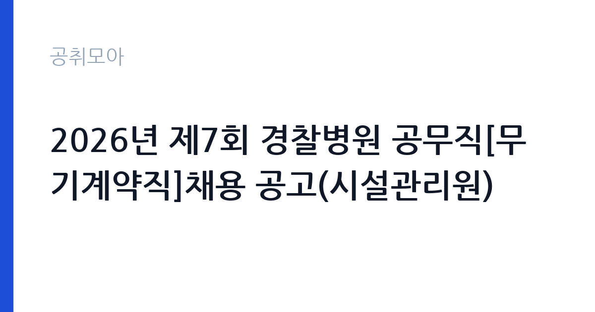

[국가기관] 2026년 제7회 경찰병원 공무직[무기계약직]채용 공고(시설관리원)
경찰청 경찰병원 · 서울 · 마감 2026-10-02 (D-10) · 출처 나라일터

한눈에 보는 모집 조건
| 기관 | 경찰청 경찰병원 |
|---|---|
| 공고명 | 2026년 제7회 경찰병원 공무직[무기계약직]채용 공고(시설관리원) |
| 고용형태 | 공무직 |
| 근무지 | 서울 |
| 게시일 | 2026-09-22 |
| 마감일 | 2026-10-02 (D-10) |
지원자격, 이렇게 읽으세요
- 시설관리원(무기계약직) 1명
- 접수 ~2026-10-02 마감
- 세부 조건은 원문 공고문 확인
채용 분야는 시설관리원으로, 세부 자격요건은 채용공고문을 참조하시기 바랍니다. 병원 시설의 전기와 기계, 건축 설비 관리 경험이나 관련 자격증(전기·기계·가스·소방 등)이 있으면 유리할 수 있습니다. 무기계약직 채용이므로 결격사유와 제출서류는 병원 공고문의 기준에 따릅니다. 접수 기간이 4일로 짧으니 미리 서류를 준비하시기 바랍니다.
이 공고의 포인트
첫 번째 포인트는 무기계약직이라는 점입니다. 기간제가 아닌 정년까지 보장되는 자리라 장기 근무가 가능합니다. 두 번째로 경찰병원은 경찰공무원과 가족의 진료를 맡는 특수 병원으로, 시설관리의 책임과 보람이 큽니다. 세 번째로 서울 근무라 출퇴근이 편리합니다. 시설관리 자격증과 병원 근무 경험을 가진 분께 적합한 공고입니다.
전형은 어떻게 진행되나
선발 방법은 1차 서류전형과 2차 면접시험입니다. 원서 접수 기간은 9월 29일부터 10월 2일까지 4일간으로 짧으니, 공고 기간(9월 22일부터) 중에 미리 서류를 준비해 두시기 바랍니다. 세부 접수처와 제출서류는 채용공고문을 참조하시기 바랍니다.
원문에서 확인한 전형 방식
경찰병원 공고 제 2026 - 92호 2026년 제7회 경찰병원 공무직[무기계약직] 채용 공고 경찰병원에서 근무할 공무직(무기계약직) 채용계획을 다음과 같이 공고하오니 성실하고 역량 있는 분들의 많은 지원 바랍니다. ○ 채용분야 : 시설관리원 ○ 채용기간 : 채용공고문 참조 ○ 선발방법 : 1차 시험-서류전형, 2차 시험-면접시험 ○ 원서접수기간 : 2026. 9. 29.(화) ~ 10. 2.(금) ○ 담당부서(연락처) : 경찰병원 인사팀 (☎02-3400-1121~2) 2026년 9월 22일 경찰병원장
이런 분께 추천해요
- 병원과 공공시설의 시설관리 경험이 있으신 분
- 전기·기계·소방 등 관련 자격증을 보유하신 분
- 서울에서 무기계약직으로 안정적으로 일하고 싶으신 분
지원 전 체크리스트
- 시설관리 관련 자격증과 경력을 정리했습니다
- 원서 접수 기간 4일(9월 29일~10월 2일)을 확인했습니다
- 무기계약직의 근무 조건을 공고문에서 확인했습니다
- 담당 부서 연락처 02-3400-1121~2를 확인했습니다
모집 일정과 제출 타이밍
원서 접수는 9월 29일부터 10월 2일까지 4일간입니다. 공고 기간이 9월 22일부터이므로 일주일 정도 준비 시간이 있습니다. 서류 합격자 발표와 면접 일정은 병원 안내에 따르시기 바랍니다. 면접 준비를 위해 병원 시설관리 업무를 미리 정리해 두시기 바랍니다.
직무 이해하기: 국가기관
시설관리원은 경찰병원 건물과 설비의 유지보수를 맡습니다. 전기와 기계, 급배수와 공조 설비의 점검, 고장 수리와 외주 관리, 안전 점검이 핵심 업무입니다. 서울의 경찰병원에서 근무하며, 국가기관 카테고리의 공무직 공고입니다. 병원 시설관리는 일반 건물과 달리 의료가스와 무정전 전원, 감염관리 구역 등 특수 설비를 다룹니다. 야간과 휴일 당직이 포함될 수 있으니 지원 전에 근무 형태를 원문에서 확인하시기 바랍니다.
자기소개서 작성 팁
지원서류에서는 시설관리 실무 경험과 보유 자격증을 구체적으로 기술하시기 바랍니다. 다뤄본 설비와 긴급 대응 사례를 수치와 함께 제시하면 좋습니다. 병원이라는 특수 시설의 안전에 대한 책임감을 전달하시기 바랍니다.
면접 준비 포인트
면접에서는 설비 고장 대응과 안전관리 경험을 질문받을 가능성이 큽니다. 실제 사례를 중심으로 답변을 준비하시기 바랍니다. 교대와 비상 대응 가능 여부를 묻는다면 솔직하게 답변하시기 바랍니다.
급여·근무조건 읽는 법
보수 수준은 원문 공고문에서 확인하셔야 합니다. 경찰병원 공무직의 급여는 병원 내규에 따른 무기계약직 보수 기준이 적용됩니다. 정확한 금액과 수당 구성, 4대 보험 적용 여부는 원문에서 확인하시기 바랍니다.
자주 묻는 질문
- 무기계약직은 어떤 신분입니까
기간의 정함이 없는 근로자로 정년까지 근무가 가능합니다. 공무직 신분으로 공공기관의 복리후생이 적용됩니다. - 접수 기간이 얼마나 됩니까
9월 29일부터 10월 2일까지 4일간입니다. 세부 접수처와 제출서류는 채용공고문을 참조하시기 바랍니다. - 어떤 자격이 유리합니까
시설관리 관련 자격증과 병원·공공시설 근무 경험이 유리할 수 있습니다. 세부 우대사항은 공고문에서 확인하시기 바랍니다.
함께 보면 좋은 공고
[국가기관] 과학기술정보통신부 전문임기제 다급(과학기술 인력양성) 경력경쟁채용 재공고 — 마감 2026-10-06[국가기관] 육군교육사령부 한시임기제군무원(응급구조담당) 채용 — 마감 2026-10-06[국가기관] 2026년 제5회 식품의약품안전처 공무원(임기제) 경력경쟁채용시험 공고 — 마감 2026-10-06출처: 나라일터 공개정보를 바탕으로 공취모아가 정리한 안내글입니다. 모집 조건·일정은 변경될 수 있으니 지원 전 반드시 원문 공고문을 확인하세요. 본 글은 정보 제공용이며 합격을 보장하지 않습니다.